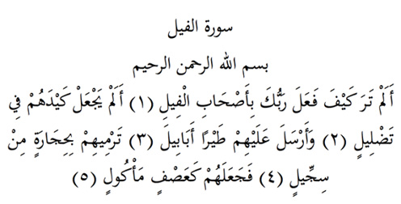

5

Fil Suresi
Anlamı: Er-Rahman, er-Rahim Allah’ın adıyla
Fil ile gelenlere Rabbin nasıl davrandı biliyorsun (1). Onların tuzaklarını bozmadı mı? (2). Hani kuş saldı üzerlerine öbek öbek (3). Balçıktan taşlar atıyorlardı onlara. (4) Ve onları yenmiş atılmış samanlar gibi un ufak ettiler (5).
Surenin iniş Kıssası:
Taberî’nin anlattığına göre özetle:
Hz. Peygamber’in doğmasına çok az bir süre kala Habeş Kralı Necaşî’nin San’a valisi olan Ebrehe Sana’da Necaşî adına muhteşem bir kilise yaptı. Ebrehe Hıristiyan’dı. Takdirini almak için durumu Necaşî’ye yazdı ve artık haccın buraya yönelmesini sağlayacağını da bildirdi. Buna kızan bir Arap kilisede pisledi. Bunun üzerine Ebrehe Kâbe’yı yıkmaya yemin etti. Mahmud adındaki Fili ile birlikte Mekke’ye yöneldi. Tâifli putperestler rehberlik etmek üzere Ebu riğal adında birisini onun emrine verdiler. Ebrehe Mekke’ye yaklaştığında oranın hâkiminin kim olduğunu sordu Abdulmuttalip olduğunu söylediler. Ebrehe onu çağırdı ve amacının savaşmak değil, Kâbe’yi yıkmak olduğunu anlattı. Eğer direnmezlerse Kâbe’yi yıkıp geri döneceğini söyledi.
Abdulmuttalib boylu poslu bir adamdı. İlk gördüğünde bu heybetli hali Ebrehe’nin dikkatini çekmişti. Ama o Kâbe’yi bırakıp, kendi develerini isteyince Ebrehe, şimdi gözümden düştün, dedi. Abdulmuttalip Kâbe’nin Allah’ ın mukaddes beyti ve onun dostu Hz. İbrahim’in mabedi olduğunu, Allah’ın onu koruyacağını söylemekle yetindi. Kendi isteğinin ise Ebrehe’nin adamlarının gasp ettiği 200 devesinin geri verilmesi olduğunu söyledi.
Develerin alıp geri döndü. Mekke halkına şehri terk etmelerini emretti. Kendisi gidip Kâbe’nin kapısına sarılıp, onu Koruması için Allaha dua etti ve o da durumu izlemek üzere bir tepenin üzerine çıktı. Ebrehe Mahmud adındaki fili ile Kâbe’yi yıkmaya yöneldi. Fil çöktü ve bütün çabalara rağmen gitmemekte direndi. Ardından Ebabil kuşlarının hücumu başladı ve Ebrehe’nin askerleri orada helak oldu.
Hz. Peygamber (sa) bu olayın oldu yıl dünyaya geldi.